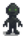

Iridium Golem
This page or section contains unmarked spoilers from update 1.6 of Stardew Valley. Players may want to avoid or be cautious toward reading this article/section. |
| Iridium Golem | |
 | |
| Information | |
| Spawns In: | Wilderness Farm |
| Floors: | |
| Killable: | Yes |
| Base HP: | 430 |
| Base Damage: | 15 |
| Base Def: | 1 |
| Speed: | 6 |
| XP: | 15 |
| Variations: |  Stone Golem Stone Golem (dangerous) |
| Drops: | After reaching Combat level 10: If reached bottom of Mines: |
Iridium Golems are a unique enemy found on farms at night if the player selects the Wilderness Farm. When the player reaches Combat Level 9 or higher, they have a 50% chance to spawn. They'll scale in difficulty based on the player's combat level; as the player's level increases so will the monster's difficulty.
Behavior
They come out of the ground and wander aimlessly and slowly make their way to the player, damaging the player if they collide. Their behavior is the same as Stone Golems.
Strategy
Swinging at them with a sword is the most effective strategy.
Notes
The seed that can drop depends on the season and date the player slays the Golem.
| From | Till | Seed | Description |
|---|---|---|---|
| Plant in the spring. Takes 3 days to grow. | |||
| Plant in the summer. Takes 6 days to grow, and continues to produce after first harvest. | |||
| Plant in the fall. Takes 8 days to mature, and continues to produce after first harvest. | |||
| This special melon grows in the winter. Takes 7 days to grow. |